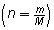
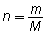
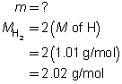
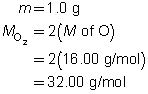
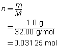
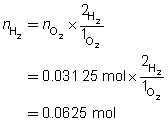
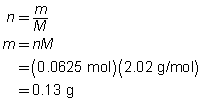

Module 6—Stoichiometry
 Explore
Explore
 Read
Read
In Lesson 1 of this module you examined the chemical reaction that occurs in the main engines of the Space Shuttle.
2 H2(l) + O2(l) → 2 H2O(g)
From your work in Lesson 1, you identified important aspects of this balanced chemical equation, such as the mole ratio for hydrogen and oxygen. You would correctly interpret this ratio as meaning that twice as many moles of hydrogen than oxygen are needed for this reaction.
What would happen if a model for this reaction were to be planned using 2.0 g of hydrogen and 1.0 g of oxygen? Would the proper stoichiometric ratio for the reaction be met? Read and follow the calculations given in the table to answer this question.
Reactant |
H2(l) |
O2(l) |
Mass |
2.0 g |
1.0 g |
Molar Mass |
2.02 g/mol |
32.00 g/mol |
Number of Moles  |
0.99 mol |
0.031 mol |
Mole Ratio of (H2:O2) |
32:1 |
|
Desired Mole Ratio |
2:1 |
|
* The desired mole ratio is derived from the balanced chemical equation. |
||
Compare the mole ratio calculated from the masses of each reactant with the desired mole ratio from the balanced chemical equation. Would the correct proportion of hydrogen be used in this model reaction? Can you provide an explanation as to why the correct proportion of these two reactants could not be met?
As you may have identified in the previous example, hydrogen and oxygen have significantly different molar masses. This was not accounted for when suggesting masses of each gas to use in the model reaction. As a result, there are very different numbers of moles for the two reactants. What effect would completing this reaction with these masses have?
yield of a reaction: a measured quantity of product obtained by a chemical reaction often expressed as a percentage of maximum yield
If the reaction were allowed to occur with the masses suggested, a large amount of hydrogen would not have reacted, simply because not enough oxygen was present. In Module 7 you will learn more about how using quantities of reactants that are not stoichiometric can affect the yield of a reaction. The yield of a reaction is a measured quantity of product obtained by a chemical reaction. It is often expressed as a percentage of maximum yield. You may have also thought that since all the hydrogen was not able to react, a much reduced quantity of energy would have been produced by the reaction as well.
What mass of hydrogen would be required to react with all the oxygen in the model reaction? How could you use your knowledge of stoichiometry to calculate this?
By examining this example, you have seen that making predictions using stoichiometry must always focus on the number of moles of each substance involved. Unfortunately, there is no device to measure the number of moles of each substance. Therefore, to complete predictions using stoichiometry when provided the mass of a substance involved, convert the mass into number of moles using this relationship:

Work through the following example to see how stoichiometric predictions can be made when you are provided with the mass of one reactant in a chemical reaction.
Example 1: For testing a rocket engine, what mass of hydrogen gas is required to completely react with 1.0 g of oxygen gas?
Step 1: Write the balanced chemical equation for the reaction.
2 H2(g) + O2(g) → 2 H2O(g)
Step 2: Organize the information provided.
2 H2(g) |
+ |
O2(g) |
→ |
2 H2O(g) |
 |
|
 |
|
|
Step 3: Calculate the number of moles of oxygen.

Step 4: Use the mole ratio between hydrogen and oxygen to determine the number of moles of hydrogen.

Step 5: Calculate the mass of hydrogen required.

To completely react 1.0 g of oxygen gas, 0.13 g of hydrogen gas are required.
Read “Calculating Masses Involved in Chemical Reactions” on page 288 of your textbook. Then work through the “SAMPLE problem 7.2” and “COMMUNICATION example” on pages 288 and 289.
 Self-Check
Self-Check
SC 1. Complete “Practice” questions 9 to 14 on page 290 of your textbook.
Read
Read “Testing the Stoichiometric Method” on pages 290 and 291. Then read “Evaluation” on pages 791 and 792.
Try This
Read “LAB EXERCISE 7.A: Testing the Stoichiometric Method” on page 291 of your textbook.
SC 2. Predict the mass of lead produced using the stoichiometric method.
SC 3. According to the evidence gathered, determine the actual mass of lead produced in this experiment.
SC 4. What is the percent difference between the experimental and predicted results?